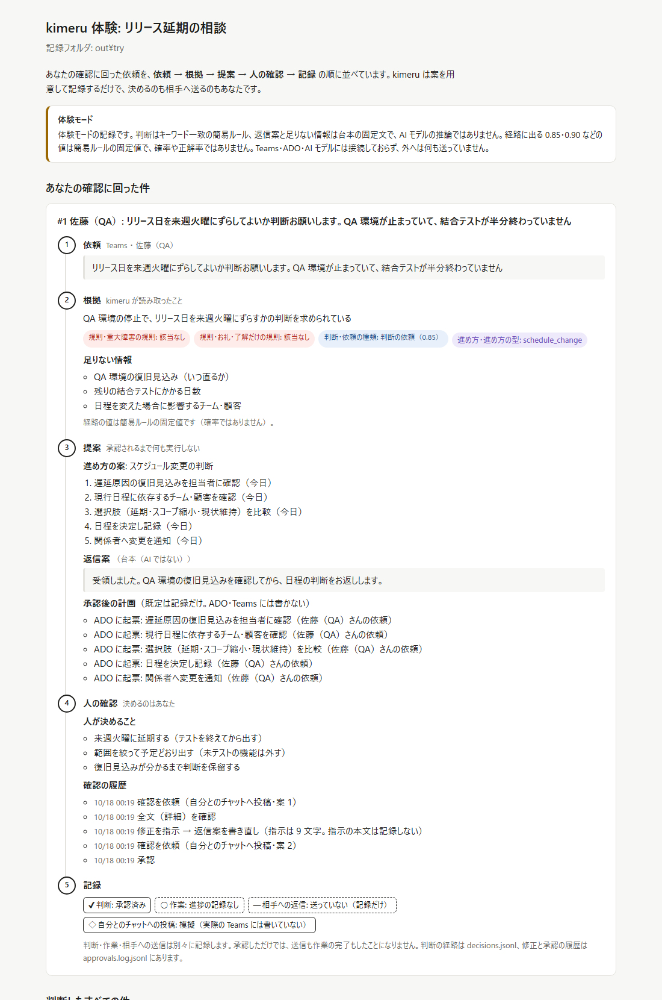

01 / 代表作 · 判断の準備 / 公開・検証段階
kimeru
届いた依頼を、
人が判断できる材料に整える。
Windows・Teamsで働くPMが、返答する前に不足情報と選択肢をそろえるためのツール。届いた依頼から、対応手順と返信の下書きを用意します。日程の判断と送信は、人が担います。
- 1. 入力依頼・チケット・
アラート・議事録 - 2. 下書き不足情報・対応手順・
返信案をそろえる - 3. 人の確認・承認原文と照合し、
修正・承認・保留 - 4. 記録判断・作業・送信の
状態を分けて残す


体験の返信案・不足情報は固定文です。AI推論・実Teams接続・外部送信は行いません。
入力から、何が得られるか
入力は、QA環境停止による日程変更の相談。出力は「復旧見込み・残りのテスト日数・影響先」の確認事項、対応の5手順、返信案、確認履歴です。
誤った約束を、そのまま送らない
体験の最初の返信案には、依頼にない「15時」が入っています。日付・数値の検査で注意を出し、修正・承認の流れを台本で再現します。画像はその修正後の記録です。
検査・承認待ち・修正履歴は実コードの処理。体験の判断値は固定値で、正解確率ではありません。
なぜ、人の承認を挟むのか
AIの案を決定や送信と取り違えないためです。承認しても作業完了にはしません。重大事象は規則で先に拾い、判断モデルと文章生成を分けて、迷った回答や情報不足に対する確認経路を設けています。
Python 3.10以上で python -m kimeru try。APIキー不要。新しく取得したフォルダから試せます。
kimeruの設計・検証・利用条件を詳しく見る
設計と開発の範囲
awano27による、生成AIを活用した個人開発。判断の流れ、承認境界、生成文の検査、検証条件をコードと設計資料で公開しています。各工程の人・AIの分担をたどれる資料は開発の進め方にまとめています。
AIに任せる範囲
既定の判定はキーワードによる簡易ルール。Kev・Jevを設定すると種類の判断を、writerを設定すると文面生成を担います。writerなしでは対応手順と定型文を返します。Codex writerは現在定型文にフォールバックします。
実環境で使うとき
- 導入条件
- Teams連携はWindows 10 / 11の画面操作です。表示や権限に依存するため、利用環境で確認が必要です。
- 保存と送信
- 判断・ログはPCに保存。Jev、設定したwriter、明示許可したリモートKevには材料を送ります。自分とのTeamsチャットへの投稿も送信を伴います。
- 操作の境界
- 相手への返信は既定では手動コピー。ADOコメントや相手への送信は、別途有効化・承認・実行操作が必要です。通知や外部接続の実機確認、実データでの評価は利用前に行います。